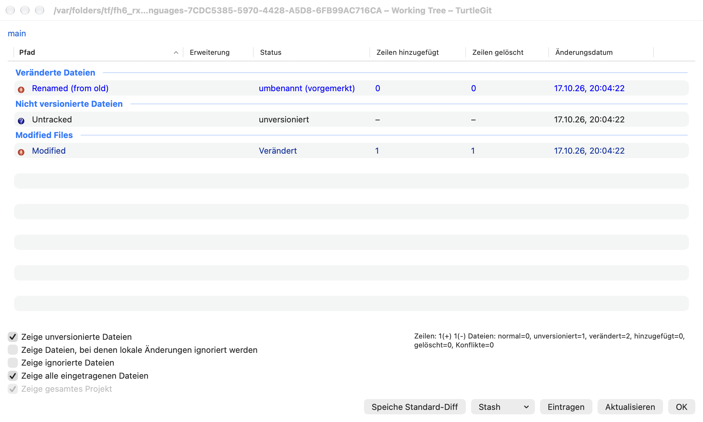
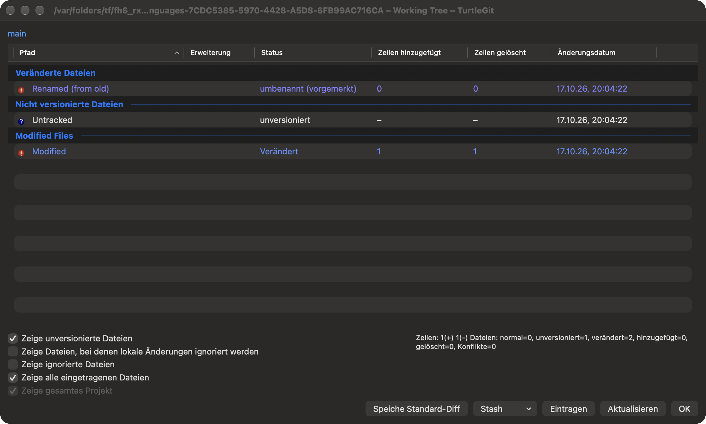
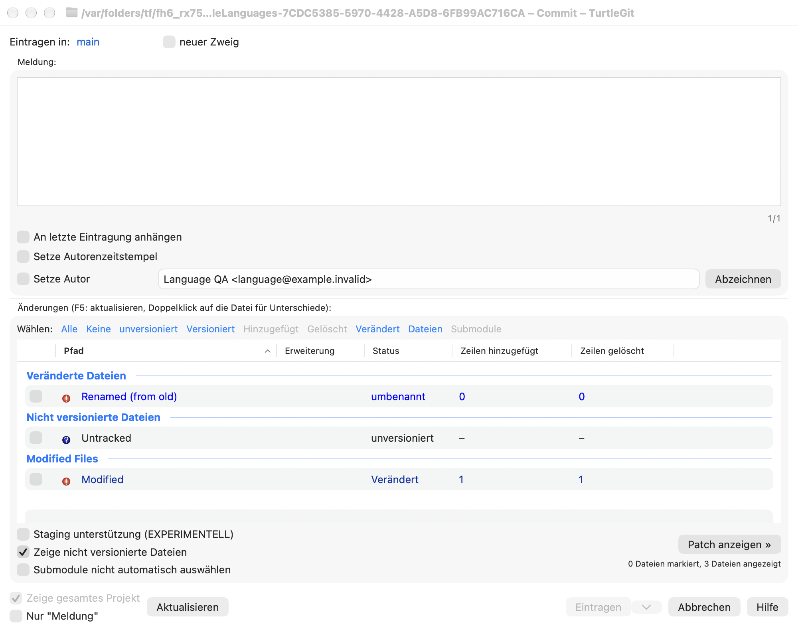
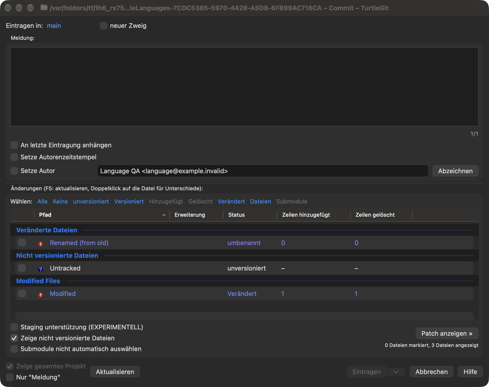

Languages
Choose Settings → General → Language, then Apply. Restart TurtleGit to apply the language throughout the app. Cancel discards an unapplied choice. System Language follows macOS; choosing it removes TurtleGit's own language override. These preferences belong to TurtleGit and do not change your system or Git configuration.
The First Start Wizard offers the same bundled languages. Next saves its language page. As with other wizard pages, cancelling a later page keeps that saved choice. Unlike Windows' separate TortoiseGit processes, this native app does not relaunch itself and discard other open windows after a language change.
English and 37 source translation catalogs are bundled. Language names appear in their own language with an English description. They cover matching TortoiseGit labels, including common buttons, checkboxes and command captions. Coverage varies: Mac-specific wording, dynamic messages and remaining native AppKit captions can still appear in English. This is partial localization, not a claim that every window is fully translated. Git commands, repository/reference names, filenames, user text and server diagnostics are not translated as labels.
Missing, fuzzy, ambiguous, plural and formatted source entries use English until they have a reviewed native adapter. German includes a small set of Mac-specific setup/navigation translations. No Windows language DLL is loaded or installed; additional translations arrive with app updates. Bundled Help remains English.
For contributors, python3 scripts/build-localizations.py --write generates the
String Catalog, locale identifiers, manifest and retained translator notices from
the pinned upstream PO blobs. --check verifies the same artifacts without
changing them. Configuration/NativeTranslations.json contains reviewed native
wording adaptations. The app bundle audit checks all compiled locale tables and
English fallback. The SwiftPM executable is an unbundled development entry point;
localized distribution uses the Xcode app.
File-list captions and columns — October 17, 2026
Dynamic status cells now use the compiled catalog in Commit, Working Tree,
workspace overview, Log changed files, revision comparisons, Rebase conflict
lists and Synchronization file lists. The shared status/Resolve and comparison
clipboard formatters receive the same bounded caption adapter. Column headings
in copied tables are translated; path-only copies retain literal paths. LFS
clipboard headings use the same column captions. Source/status model values,
Git action letters, row IDs, sort keys and saved column identifiers remain stable.
Repository paths, references, lock owners, user text and server diagnostics are
never submitted as file-list labels, even when a path is named Modified.
Fixed AppKit headers in Add, Add/Revert/LFS progress, Log/Sync history tables and the patch file panel now request their existing translations. Native header menus display translated column names. Column discovery resolves unambiguous localized captions and retains the existing declared-order fallback; native column objects retain their semantic identity across layout restoration. A translated Copy to Clipboard parent still receives its current-column command. Its column caption uses the same catalog. This does not certify every AppKit menu or alert caption in the app.
The pinned CTGitPath::GetActionName and GitStatusListCtrl use resource-backed
status/action labels. The native catalog uses explicit spelling aliases:
Renamed from renamed, Untracked from Unversioned, and Skip-worktree from
skip-worktree. Metadata headers also use Last modified from Modification date
and File size from Size. They retain native English keys and source translations, without
general case folding. Ambiguous/fuzzy/missing translations still fall back to
English. Reviewed German/French native wording covers type changes, the
assume-unchanged flag, staged qualifiers and the column prefix. Other languages
can retain English for these Mac-specific phrases.
Batch evidence records the affected Core serialization contracts, actual native controls, compiled language processes, source provenance and owned process cleanup. Physical clipboard/menu tracking, all locales, RTL, full status sorting/source variants, VoiceOver and signed sandbox/installed Finder acceptance remain open. No hidden Windows KeepFileListsEnglish control is activated: the pinned resource hides it and the source has no consumer.
The earlier status-caption evidence retains that checkpoint's captures. The current group/count captures below supersede its English group, metadata and count limitations within this scope.
Group, selection and count continuation — October 17, 2026
Commit and Working Tree now translate built-in group headings through their
semantic group role. User changelist names, including Modified Files, remain
literal. Both the drawn native heading and its underlying SwiftUI/accessibility
caption follow that rule. Group IDs, selection and Git path membership are
unchanged. Quick-check buttons and the Commit menu now request their label
translations; All/None, Shift inversion, icons and command ownership are retained.
The native Commit menu is placed before macOS's semantic Window/Help menus even
when their captions are translated.
Commit's checked/shown and staged/unstaged summaries, plus Working Tree's source
line/action totals and visible-file tooltip, use named integer templates.
Configuration/NativeTranslations.json supplies reviewed German/French forms.
Translation fields can be reordered, but omission, duplication, invented fields,
malformed braces and printf-style substitutions are refused by generation. The
runtime independently falls back to the English template for invalid fields.
Only integer values are substituted in one pass. Checked/shown text selects
English singular/other forms for each count; staged text distinguishes a single
unstaged file. This is not a complete CLDR/plural port across all languages.
The original totals, including the pinned normal-count behavior, are preserved. Type-specific metadata headings reuse their reviewed source labels. The patch and partial-staging controls now localize their dynamic captions; their actions and right-hand staging window behavior stay the same. Other untranslated native messages and full physical/RTL/VoiceOver/signed acceptance remain open.
Continuation evidence records the Core format contracts, converter validation, native command and counter checks, source provenance, actual captures and receiver cleanup.
These unaltered German light/dark captures show translated built-in groups,
selection links, counters and metadata headings. The English group Modified Files
is a deliberately named user changelist; filenames also deliberately retain English.
Other untranslated messages and full application parity remain separate work.



